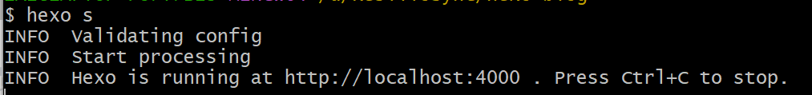
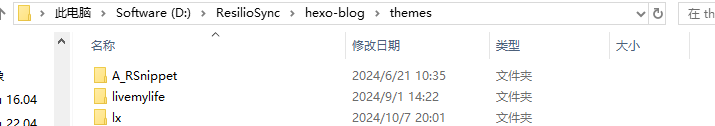

Github Pages本身提供静态网页托管服务，做一个简单的博客已经足够了，下面是配置Github Pages博客的操作介绍
一、准备工作
1.注册Github账号
2.在本地安装git软件
3.在本地安装NodeJS
二、创建Github仓库
在Github中新建repository，仓库名称必须为<用户名>.github.io，并且是公开仓库
三、在本地安装Hexo
在你打算写博客的目录右键，open Git Bash here
在git bash中输入命令安装hexo
1 | npm install -g hexo-cli |
安装完成后，创建一个项目 hexo-blog 并初始化，这个名字可以改
1 | hexo init hexo-blog |
然后可以使用hexo的命令生成并启动
1 | hexo g # 等同于hexo generate，用于生成静态网页文件 |

可以按住ctrl鼠标点击网址跳转到浏览器打开，或者手动打开http://localhost:4000即可看到hexo 服务端的默认欢迎页面
四、配置主题
启用主题
hexo可以使用默认主题，也可以按照自己的喜好选择主题，可以在官网主题页面选择，也可以在Github中搜索[Hexo theme]下载使用开源主题，以我当前使用的lx主题为例
在Github中下载源码，解压后直接放入hexo-blog/themes目录下，并更名为lx

修改hexo-blog目录下的_config.yml，将theme条目修改为theme: lx，同时也可以更改页面的title、author等，如果需要中文将language改成 language: zh-hans
使用hexo的命令生成并启动，看是否配置正常
1 | hexo g # 等同于hexo generate，用于生成静态网页文件 |
修改主题特性
上面修改的是项目根目录下的_config.yml，针对项目属性进行配置。要对主题本身提供的特性进行修改需要修改thems/lx/目录下的_config.yml，比如avatar(头像)、social(社交媒体链接)等
社交媒体链接可以按以下形式填写，icon使用的是fontawesome只需要按照fontawesome的名字填写在icon栏就会自动加载对应的icon
GitHub:
icon: github
link: https://github.com/RFV56
Email:
icon: envelope
link: mailto:rfv56x@163.com
JLC:
icon: microchip
link: https://oshwhub.com/rfv56
还可以开启百度统计、latex、评论、搜索等功能，部分功能需要使用第三方平台，相关细节在主题的开源页面上及_config.yml注释中会提及。
五、新建文章
为了每一篇文章单独新建一个文件夹用于存放文章中的图片，需要在_config.yml中配置post_asset_folder: true
在git bash中输入以下命令创建文章
1 | hexo new post 文章标题 |
新建的文章会以markdown格式创建在<项目根目录>/source/_posts中，可以使用VScode、Obsidian等编辑文章
六、部署项目到Github
到目前位置所有配置项都是在本地完成修改的，要把项目部署到Github提供公共访问需要手动push public到Github仓库，或者使用hexo-deployer-git
下面安装hexo-deployer-git，
在项目根目录打开git bash，输入以下命令
1 | npm install hexo-deployer-git --save |
修改根目录下的_config.yml，配置 GitHub 相关信息
deploy:
type: git
repo: https://github.com/RFV56/RFV56.github.io.git
branch: main
token: <token要自己获取>
其中repo仓库地址填写自己创建的github.io仓库地址，token在github设置中获取，Settings-Developer Settings-Personal access tokens-Tokens(classic)新建一个并填入_config.yml中，这个token不要暴露给任何人
配置完成后，就可以部署项目了
1 | hexo g # 等同于hexo generate，用于生成静态网页文件 |
至此hexo+Github Pages个人博客就配置完成了，输入自己的博客地址https://rfv56.github.io/就能实现外部访问